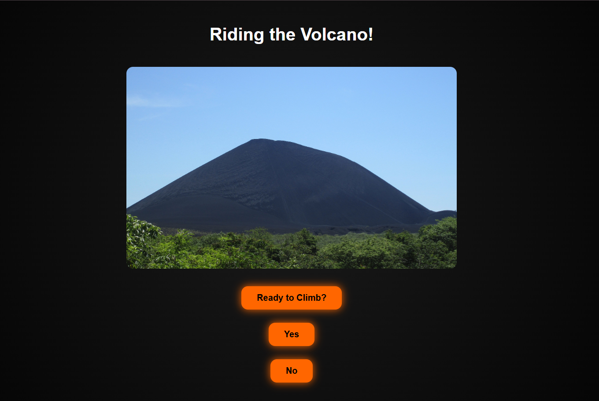

Riding The Volcano Created using the HTML language to interconnect several web pages, this project represents an anecdote I experienced with my family: an adventure that begins with a hike, followed by climbing a volcano, and ends with surfing from its very top. In addition, thanks to this language, I was able to develop an interactive webpage with two options that allow the user to decide the course of the story.
